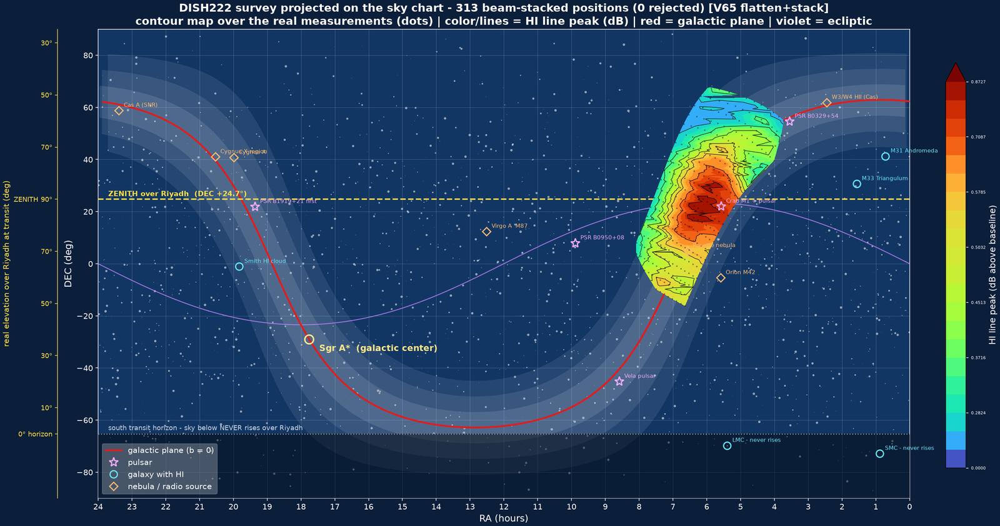

Radio Astronomy · Prince Sultan University
Turning historical radio observations into new science
Several generations of telescopes at PSU and PNU have been listening to neutral hydrogen in the Milky Way. We are reprocessing those observations into traceable, reproducible datasets that students can keep analysing.
Authorized project members enter using their approved email address.

The EMXplore Radio Astronomy Portal
The EMXplore Radio Astronomy Portal is the central research and learning environment for the radio astronomy activities developed at PSU and collaborating institutions. Its purpose is not only to document the telescopes and their history, but to turn the observations accumulated over several generations of instruments into traceable, reproducible, scientifically useful datasets that students and researchers can continue to analyze.
The portal presents a clear progression from the historical fixed zenith-pointing telescopes at PSU and PNU to the active PSU steerable telescope, DISH222. Students entering the project can understand what each telescope measured, how the observing method evolved, what data are available, how measurements are converted into astronomical quantities, and which scientific questions remain open. Access to the Radio Astronomy project is restricted to authorized members by email, while the rest of EMXplore remains public.
- PSU fixed telescope (historical): a 5 m zenith-pointing reflector.
- PNU fixed telescope (historical): the same zenith-pointing design at another Saudi university.
- PSU moving telescope, DISH222 (active): a steerable 5 m dish capable of targeted pointing, tracking and raster mapping.


Using the historical data
The PSU fixed-telescope archive is particularly valuable because several generations of the same observations have survived. The earliest available products are averaged spectra stored as TXT files containing frequency versus relative amplitude, with the receiver/background spectral response already corrected. Approximately one spectrum was recorded every two minutes.
These spectra were subsequently grouped into MATLAB datasets of roughly 1000 observations, representing about 33 hours of observing time. A later generation of MATLAB files contains the historical correction from solar-time representation to sidereal time and Right Ascension, and a station-wide MATLAB structure combines the corrected PSU observations.
These different generations give us an opportunity not merely to display historical results, but to reconstruct and verify the full scientific processing chain.
From recorded spectra to scientific data
The new processing workflow will always preserve the historical records unchanged. Modern products will be generated separately and linked through provenance. The principal transformations are:
- Time and sky position: reconstruct UTC, Local Sidereal Time, Right Ascension and the fixed declination of the zenith drift scan, then compare the modern calculation with the historical MATLAB RA correction.
- Frequency and velocity: preserve the originally measured frequency spectrum while deriving Doppler velocity in appropriate reference frames, including topocentric, barycentric, heliocentric and LSR/LSRK representations.
- Relative intensity and temperature: preserve the recorded relative intensity and investigate the historical solar and other calibration measurements to determine whether a defensible antenna- or brightness-temperature scale can be established, including calibration uncertainty.
- Scientific archiving: produce standardized FITS products with complete observational metadata, processing history, calibration state and provenance, together with CSV, JSON and graphical representations where useful.
- Scientific validation: compare the reprocessed observations with professional H I surveys and with the published historical results, while clearly distinguishing what was originally measured from what has been derived using the modern pipeline.
Role of the portal
The portal will provide the human-facing layer above this scientific pipeline. A student should eventually be able to choose a historical observation and view the same measurement through progressively more meaningful representations:
- Original recorded spectrumMeasured
- Celestial position / Right AscensionDerived
- Frequency and Doppler velocityDerived
- Relative intensityMeasured
- Calibrated temperatureDerived
- Scientific comparison and interpretationInterpretation
The Data Library will present observations as coherent scientific datasets, while its Archives section will expose their underlying lineage: TXT spectra, MATLAB bundles, historical RA/LST products, master datasets, and eventually standardized FITS/CSV/JSON products.
The Data to Science section will explain the transformations themselves, allowing students to understand why each correction is required rather than treating processing as a black box.
Scientific objective
The objective is therefore not simply to modernize old file formats. It is to use the original observations to create a new, reproducible scientific dataset whose relationship to the historical measurements is completely documented.
This gives the fixed-telescope observations renewed scientific value while providing an ideal training environment for students. They can reproduce the historical processing, verify it using modern astronomical tools, improve the spectral and calibration treatment, compare the results with reference surveys, and ultimately publish standardized data products.
Once students understand this chain using the simpler fixed telescope, they can move naturally to DISH222, where the same principles apply to a much richer observing system capable of targeted pointing, tracking and raster mapping.
In that sense, the portal becomes both a scientific archive and a research laboratory: preserving what was measured, explaining what was done historically, showing what we can improve today, and providing students with real data from which new scientific results can be produced.
New to the topic? The 52-slide interactive lecture teaches the 21-cm line, the telescope, calibration and velocities. Published work is on the publications page.
Join the research
The working portal holds the telescope descriptions, the data library and archives, the data-to-science guides and the project log.
Authorized project members enter using their approved email address.